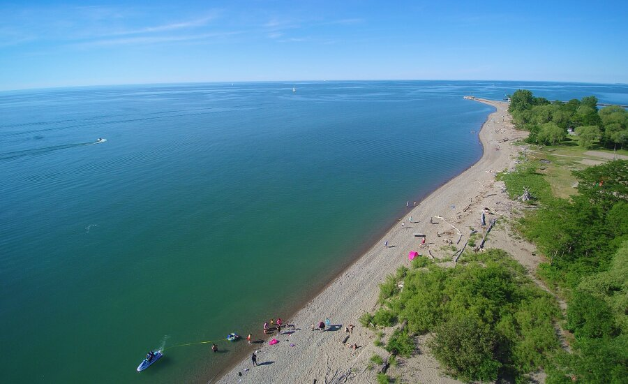
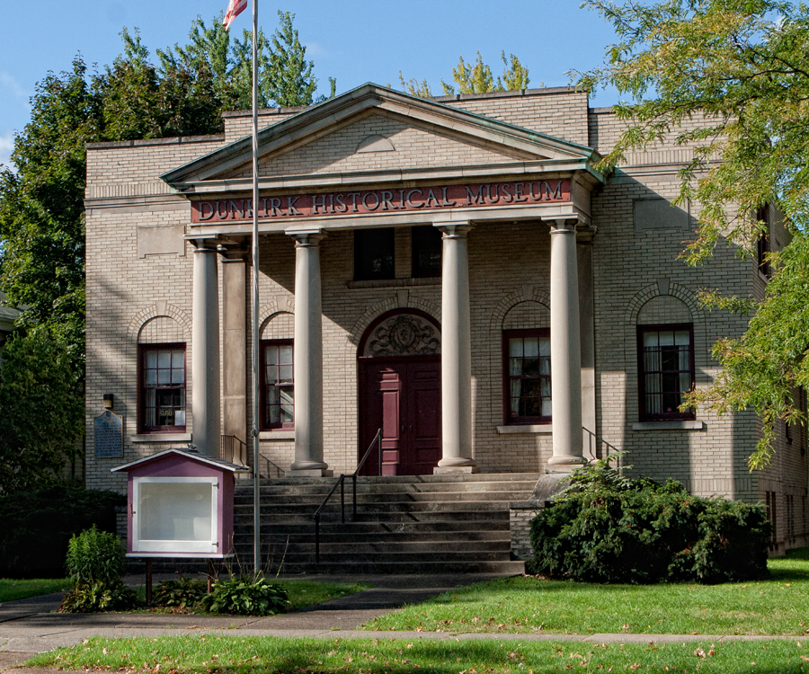
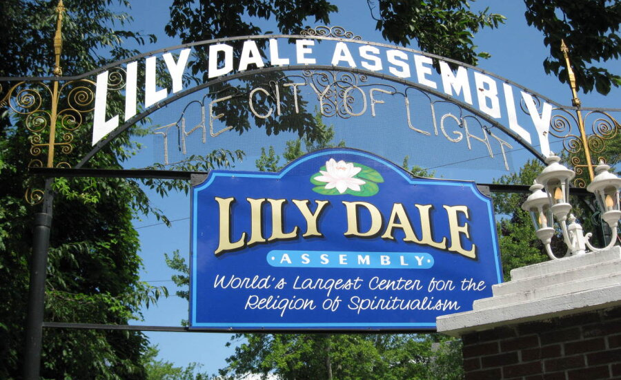

Lake Erie

Lake Erie is the smallest of the Great Lakes in volume (119 cubic miles) and is exposed to the greatest effects from urbanization and agriculture. Measuring 241 miles across and 57 miles from north to south, the lake's surface is just under 10,000 square miles, with 871 miles of shoreline. The average depth of Lake Erie is only about 62 feet (210 feet, maximum). It therefore warms rapidly in the spring and summer, and frequently freezes over in winter.
Dunkirk Historical Museum

The Historical Society of Dunkirk has operated the Dunkirk Historical Museum at 513 Washington Avenue in Dunkirk since 1980 and continues to provide historical information to the public regarding the city. This website provides some informational content regarding the history of our city, but also gives a brief overview of our Collections, which outlines the contents of our museum, including documents, research material, photographs, art work, as well as physical objects that range from medals to fire fighting equipment to railroad paraphernalia. Look for the form that allows you to submit a request for historical and genealogical research.
Lilydale

We are an international member organization and residential community comprised of persons who practice the faith of spiritualism. Spiritualism is an active faith guided by a set of principles. This faith is applied through prayer, meditation, healing, and mediumship. We have members from across the globe who can participate and contribute to our organization through education, service, active participation, contemplation, or as donors. Our community and its organization is governed by a set of Bylaws and Rules and Regulations.